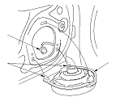

Front Speaker Replacement
Front Speaker
Remove the door panel.
If you pull the speaker out too far from the door, you will damage the lower clips (B).
Pull the speaker (A) straight out, just enough to release the upper clips. Then lift the speaker straight up to release the lower clips (B).
Disconnect the 2P connector (C), and remove the speaker.
